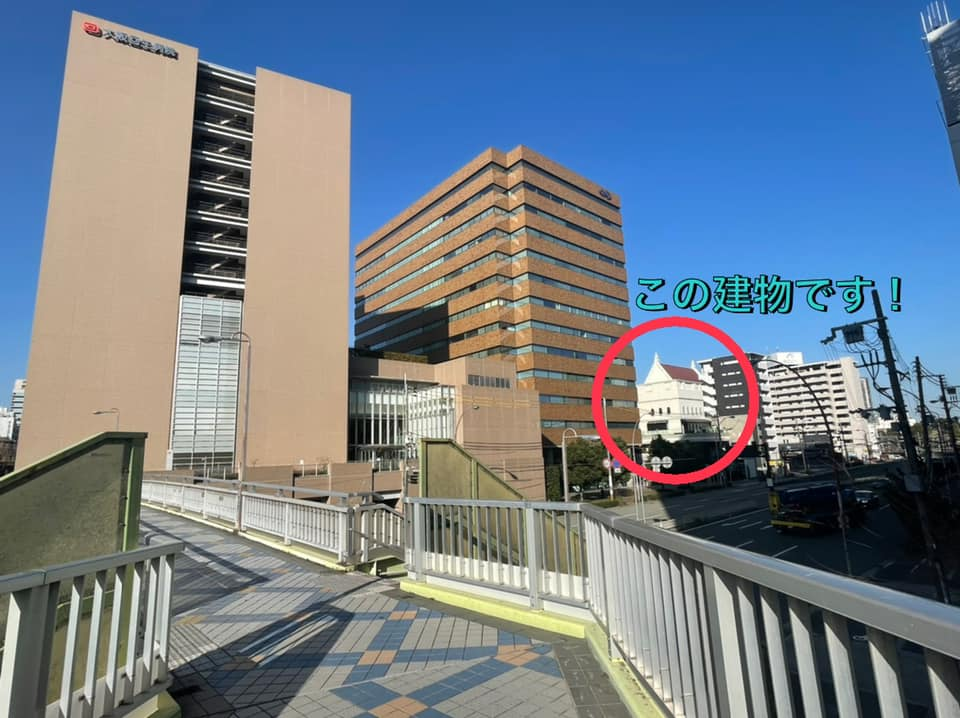

JR新大阪駅からの道案内
①東改札口を出たら、右に曲がります。

②そのまま、しばらくまっすぐ進みます。
③アントレマルシェがある広場まで来たら右へ曲がります。

④右へ曲がったらタリーズコーヒーが見えるまでまっすぐ進みます。
⑤タリーズコーヒーとエスカレーターの間の道を進みます。

⑥マクドナルドがある道を通り自動ドアから外に出ます。

⑦COUTYARD Marriottホテルがある方へ連絡橋をまっすぐ進みます。

⑧ホテルを過ぎるとこんな景色が見えます。
⑨回生病院の手前の階段をおりて道なりにすすむと…

⑩到着です！本日はよろしくお願いいたします。